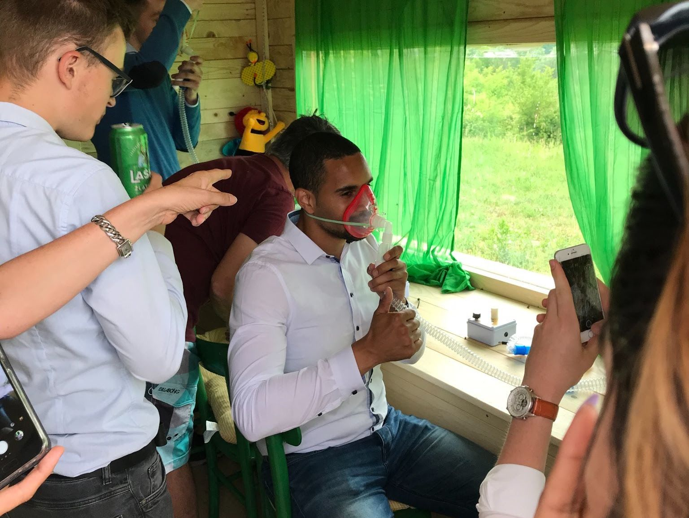
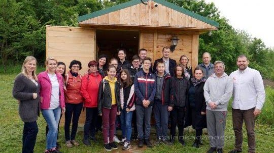

Etarska isparenja propolisa, meda, voska, matičnog mleča i perge, kao i aromatične materije cvetova, nektara i voska koje se oslobađaju iz košnice naseljene pčelama, ispunjavaju vazduh oko pčelinjaka. Boravak u takvom okruženju mnogi doživljavaju kao opuštajući i okrepljujući – bolje spavaju, imaju bolji apetit i raspoloženje. Tretmani u apikomori su noviji pravac u apiterapiji, tradicionalnoj metodi koja koristi pčelinje proizvode.
Apikomora je drvena kućica koja služi za inhalaciju vazduha iz košnice ili za ležanje nad košnicama, pri čemu osobe unutra nemaju direktan kontakt sa pčelama. Obe metode primenjuju se od aprila do polovine avgusta, kada su pčele aktivne. Košnice koje se koriste u ovu svrhu moraju imati jaka i zdrava pčelinja društva, i u periodu inhalacija ne tretiraju se protiv varoe hemijskim sredstvima. Protiv varoe se borimo isključivo prirodnim putem – ramom građevnjakom, a kasnije organskim kiselinama.


Inhalacija se vrši pomoću posebnih maski priključenih na ventilator, koji se postavlja na otvor na poklopcu košnice. Protok vazduha iz košnice reguliše se potenciometrom. Maske imaju nepovratni ventil, kako se izdahnuti vazduh ne bi vraćao u košnicu.
Mnogi korisnici inhalacije koriste radi jačanja opšte otpornosti organizma – sportisti, deca i starije osobe – a posebno ih biraju oni koji imaju tegobe sa disajnim putevima (nos, sinusi, grlo, bronhije).
Inhalacija traje 10 do 20 minuta, jednom ili dva puta dnevno, a broj i raspored tretmana dogovaramo pojedinačno.
Ležanje nad košnicama je druga metoda koja se primenjuje u apikomori. Osoba leži na leđima na drvenom poklopcu ispod kojeg su smeštene košnice, sa nogama savijenim u kolenima i rukama uz telo, dlanovima okrenutim nadole. Tako se osećaju mikrovibracije koje nastaju treperenjem krila pčela i njihovim radom u košnici – svojevrsna vibraciona masaža. Monotono zujanje pčela deluje kao vrsta „meditacije“: opušta i smiruje. Smatra se i da pčele u košnici jonizuju vazduh.
Ležanje traje od 30 minuta do sat vremena. Posebno ga cene osobe pod stresom, sa hroničnim umorom i problemima sa snom.

Boravak u apikomori nije zamena za lečenje i terapiju koju je propisao lekar.

Poseta đaka i profesora OŠ „Olga Milošević“ Poseta studenata i profesora iz Holandije
Poseta studenata i profesora iz Holandije Poseta kolega pčelara iz Slovenije
Poseta kolega pčelara iz Slovenije Poseta kolega pčelara iz Slovenije
Poseta kolega pčelara iz SlovenijeTermine u apikomori dogovaramo telefonom.